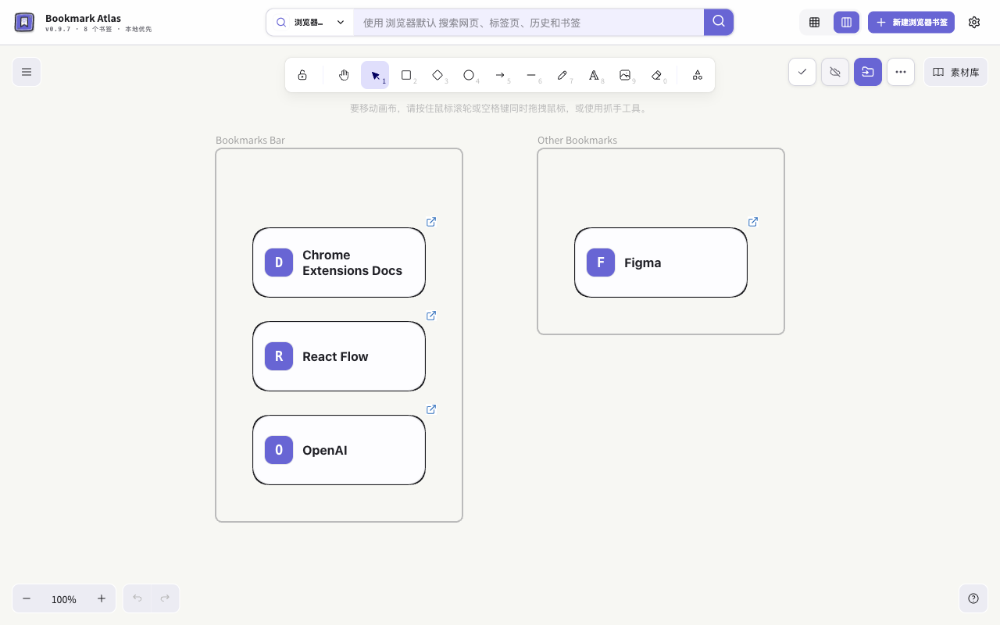

Bookmark Atlas for Microsoft Edge
新标签页，
给想法留些空间。
在完整 Excalidraw 画布里整理 Edge 收藏，添加备注、绘图，并嵌入可交互的网页和视频。
原生收藏 · 本地优先 · AI 可选
尚未提供 Edge 公开安装链接，正式上架后将在此公布。

Edge 草稿状态
Edge v0.9.7 为商店草稿。本机功能已由用户验收，两设备同步仍待验证；完成该项验证后才能提交商店审核。
Chrome 已发布版本保持为 0.9.6，此 Edge 草稿不表示 Chrome 0.9.7 已发布。
先收藏，
再让它派上用场。
保留 Edge 原生收藏，在自由画布上组织内容；手动整理无需模型账号。
添加
通过扩展图标收藏当前页，保存原生收藏，并将画布插入任务存入本机队列，成功落盘后才完成。也可以导入已有收藏。
整理
选择图标、紧凑或详细卡片，用完整 Excalidraw 工具添加备注、框架、绘图和箭头。
打开
点击卡片的网站图标打开网页，或统一搜索收藏、已打开标签页和浏览历史。
本地优先，
清楚每次发送。
阅读完整隐私政策保留完整副本
完整画布和附件保存在本机。符合条件的轻量数据可写入浏览器同步存储，需要受支持的 Edge 账号与匹配的扩展身份。本机状态不能证明远端送达；请导出完整备份保留全部内容。
AI 由你选择
确认所选卡片 ID、标题、域名、已有备注与整理要求后才发送，应用前先看预览。服务商费用和政策适用。保存的 API Key 在本机加密，不同步、不进入备份，也不是操作系统钥匙串。
一起完善下一张画布。
反馈问题，或告诉我们希望适配的网站。